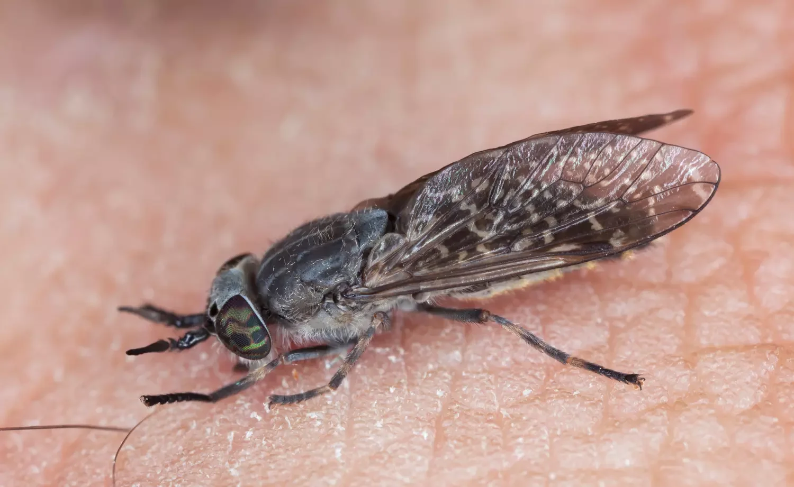

Société de traitement des insectes a dard à Casablanca Maroc
Les piqûres d'insectes à dard sont désagréables et peuvent être pénibles, surtout si vous souffrez de plusieurs piqûres.
Mais le risque d'être piqué peut être réduit par la destruction des nids de guêpe dans ou près des maisons, et par la prise de précautions basiques dehors.

Allergies aux dards d'insectes
Certaines personnes sont beaucoup plus sensibles aux dards d'insectes que d'autres, comme les jeunes enfants, qui tendent à être particulièrement sensibles.
Mais le principal groupe à risque est constitué par les trois pour cent de la population qui sont allergiques au venin des dards. Une allergie aux dards d'insectes peut apparaître n'importe quand, même sur une personne qui n'a pas été allergique à une piqûre précédente.
Appelez une ambulance immédiatement si une personne fait une réaction violente à un dard d'insecte.
Les symptômes incluent l'évanouissement, les vertiges, la nausée ou des difficultés respiratoires ou de déglutition.
Certaines personnes sont beaucoup plus sensibles aux dards d'insectes que d'autres, comme les jeunes enfants, qui tendent à être particulièrement sensibles.
Mais le principal groupe à risque est constitué par les trois pour cent de la population qui sont allergiques au venin des dards. Une allergie aux dards d'insectes peut apparaître n'importe quand, même sur une personne qui n'a pas été allergique à une piqûre précédente.
Appelez une ambulance immédiatement si une personne fait une réaction violente à un dard d'insecte.
Les symptômes incluent l'évanouissement, les vertiges, la nausée ou des difficultés respiratoires ou de déglutition.
Insectes à dard et insectes piqueurs
Les insectes à dard ne doivent pas être confondus avec les insectes piqueurs.
Un insecte utilise son dard en tant que forme de défense contre une menace perçue, contre lui-même ou contre sa colonie. Il pique en injectant du venin dans ou sous la peau. L'effet est immédiat et provoque une sensation de brûlure aiguë.
Alors que les dards sont utilisés dans un but de défense, les insectes piqueurs piquent pour extraire le sang. Pour que l'insecte ait le temps de se nourrir, les piqûres d'insectes sont faites de façon à ce que la douleur ne soit pas aussi aiguë que celle provoquée par un dard (même si la piqûre d'un taon est très douloureuse).
Les insectes à dard ne doivent pas être confondus avec les insectes piqueurs.
Un insecte utilise son dard en tant que forme de défense contre une menace perçue, contre lui-même ou contre sa colonie. Il pique en injectant du venin dans ou sous la peau. L'effet est immédiat et provoque une sensation de brûlure aiguë.
Alors que les dards sont utilisés dans un but de défense, les insectes piqueurs piquent pour extraire le sang. Pour que l'insecte ait le temps de se nourrir, les piqûres d'insectes sont faites de façon à ce que la douleur ne soit pas aussi aiguë que celle provoquée par un dard (même si la piqûre d'un taon est très douloureuse).
Traitement d'une piqûre d'insecte à dard
Contrairement à la croyance populaire, le dard de guêpe n'est pas alcalin, et celui de l'abeille est seulement faiblement acide. La chimie de la piqûre d'insecte à dard est beaucoup plus complexe ; par conséquent, les remèdes traditionnels (baigner une piqûre de guêpe dans le vinaigre, ou une piqûre d'abeille dans le bicarbonate de soude) ne soulageront que peu. Pourtant, certaines mesures pratiques peuvent être prises.
En cas de piqûre d'abeille, la douleur sera sensiblement réduite si le dard est enlevé rapidement. Cela doit être fait soigneusement, à l'aide d'ongles pointus, d'une pince à épiler ou d'un couteau; mais attention à ne pas presser le sac venimeux, car cela injecterait plus de venin dans la plaie.
Lavez la plaie avec de l'eau et du savon, puis réduisez le gonflement en la baignant dans de l'eau froide, ou en la couvrant avec une compresse froide, comme un glaçon enveloppé dans un tissu (mais n'appliquez jamais de glace directement sur la peau).
Pour soulager les démangeaisons, appliquez une crème antihistaminique pour les piqûres et les dards, ou prenez un comprimé d'antihistaminique oral (un « comprimé contre le rhume des foins »).
On peut aussi appliquer du péroxyde de zinc sur la plaie pour la refroidir et réduire les démangeaisons. Si les démangeaisons sont violentes, demandez à un pharmacien une crème stéroïde.

Lavez la plaie avec de l'eau et du savon, puis réduisez le gonflement en la baignant dans de l'eau froide, ou en la couvrant avec une compresse froide, comme un glaçon enveloppé dans un tissu (mais n'appliquez jamais de glace directement sur la peau).
Pour soulager les démangeaisons, appliquez une crème antihistaminique pour les piqûres et les dards, ou prenez un comprimé d'antihistaminique oral (un « comprimé contre le rhume des foins »).
On peut aussi appliquer du péroxyde de zinc sur la plaie pour la refroidir et réduire les démangeaisons. Si les démangeaisons sont violentes, demandez à un pharmacien une crème stéroïde.
Symptômes d'une réaction allergique
Chez les personnes présentant une allergie modérée aux dards, le gonflement autour de la plaie sera sans doute plus large. Consultez un médecin si le gonflement est important ou persistant.
Appelez immédiatement une ambulance si l'un des symptômes suivants apparaît dans les 30 minutes suivant une piqûre par un dard:
Chez les personnes présentant une allergie modérée aux dards, le gonflement autour de la plaie sera sans doute plus large. Consultez un médecin si le gonflement est important ou persistant.
Appelez immédiatement une ambulance si l'un des symptômes suivants apparaît dans les 30 minutes suivant une piqûre par un dard:
Gonflement autour de la gorge, de la bouche ou de la langue, pouvant gêner la respiration.
Respiration bruyante, suffocations ou incapacité à respirer
Evanouissement, vertiges ou maux de tête.
Douleurs de poitrine.
Nausée ou crampes d'estomac.
Souvenez-vous que les allergies aux dards d'insectes peuvent apparaître à tout moment.
Les personnes piquées par un dard à une ou plusieurs reprises dans les années précédentes présentent un risque plus élevé d'allergie.
Les personnes souffrant d'autres allergies (aux pollens ou aux animaux domestiques, par exemple) sont un autre groupe à haut risque.
Prévention des piqûres d'insectes à dard
Les personnes sensibles aux dards d'insectes doivent prendre des précautions pour minimiser le risque de piqûre, mais il y a aussi des mesures pratiques que nous pouvons tous adopter.
Conseils pour éviter d'être piqué en plein air:
Les personnes sensibles aux dards d'insectes doivent prendre des précautions pour minimiser le risque de piqûre, mais il y a aussi des mesures pratiques que nous pouvons tous adopter.
Conseils pour éviter d'être piqué en plein air:
Évitez de porter des couleurs éclatantes et des parfums ou des déodorants forts, car ils attirent les insectes.
Utilisez des sprays insectifuges sur les parties de peau exposées.
Utilisez des produits insectifuges ou des bougies
Ne laissez pas de boisson sucrée et de nourriture exposée
Faites attention à la présence d'abeilles avant de vous asseoir, de vous allonger ou de vous reposer.
Évitez les zones où les guêpes se réunissent, comme les vergers.
Portez des gants lorsque vous ramassez des fruits tombés au sol.
N'essayez jamais d'écraser des guêpes ou des abeilles. Cela augmente la probabilité de piqûres et peut exciter l'essaim.
N'agitez pas vos bras et essayez de ne pas paniquer, car cela aussi excite l'insecte. Si vous entrez dans une zone fréquentée par de nombreux insectes à dard, éloignez-vous en marchant calmement et lentement.